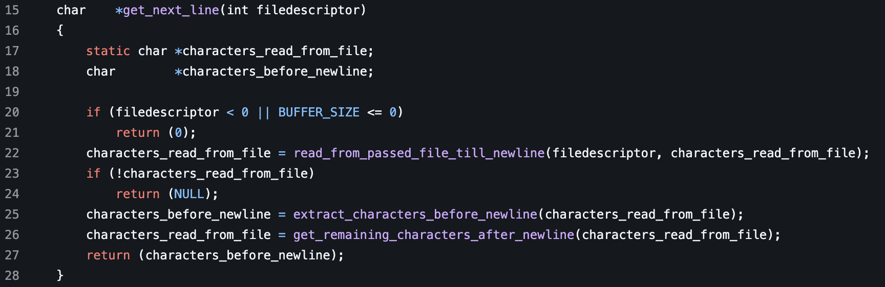
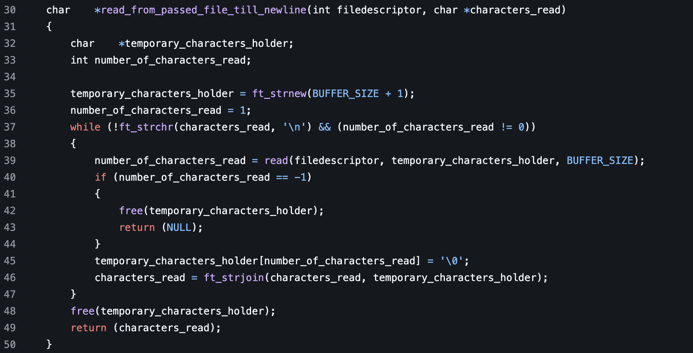
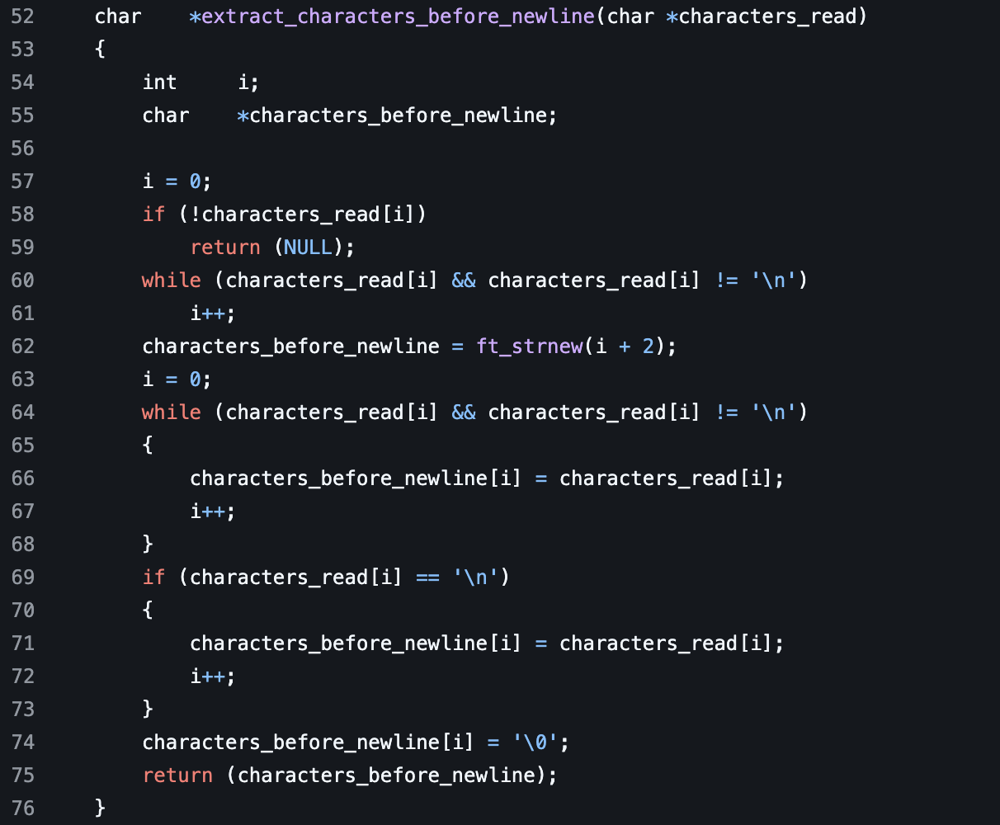
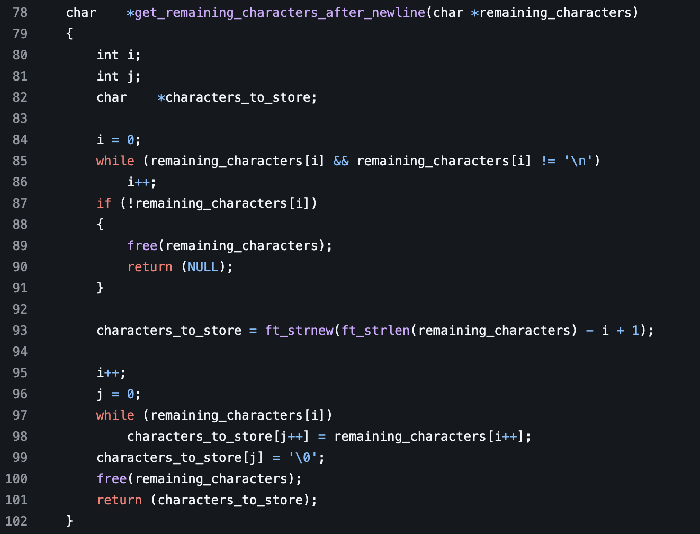

Get Next Line
Get Next Line
Doing this project helps us understand the difference between the stack and heap. We also learn how static variables work.
The code outlined below is a refactor of orginal code from Ali Ogun
This code is tested using the gnl-station-testter from Kodpe.
get_next_line
This function returns a character pointer. It takes an integer called filedescriptor for it’s parameter. We then declare two variables. A static character pointer called characters_read_from_file. Then a character pointer called characters_before_newline. A static variable remains the same value throughout the scope of the program. Even though it is declared locally the context of its value is still shared between functions. Next we have an if statement that is checking to see if the filedescriptor is less than 0 or the BUFFER_SIZE is less than 0. BUFFER_SIZE is a predefined macro located in the header file of the program. Next we set characters_read_from_file to the return value of read_from_passed_file_till_newline function. We pass filedescriptor as well as characters_read_from_file as parameters.

read_from_passed_file_till_newline
This function returns a character pointer. It takes two parameters. One parameter is an integer called filedescriptor another is a character pointer called characters_read. Next we declare two variables. One character pointer is called temporary_character_holder. Then an integer named number_of_characters_read. Next we initialize temporary_character_holder to equal the return value of ft_strnew with the BUFFER_SIZE + 1. Next we initialize the number_of_characters read to equal one. Next we start a while loop with the condition that ft_strchr with the parameters characters_read and a newline is not true. Meaning that the current character pointer does not contain a new line. And that the number_of_characters read is now equal to 0. Next we set the number_of_characters read equal to the return value of the read function. In the read function we pass three parameters. One is the filedescriptor, another is temporary_characters_holder, then BUFFER_SIZE. We then move forward to check if the number_of_characters_read is equal to negative 1 then we free the temporary_characters_holder. After that we return NULL. if it is not equal to -1, which indicates an error, we then move to set temporary_characters_holder at the index position of number_of_characters_read equal to a null pointer. Then we set characters_read equal to the return value of ft_strjoin with characters_read and temporary_characters_holder as parameter values. Once the while loop is complete we free the memory of the temporary_characters_holder. After this we return characters_read.

back to get_next_line
After this we check if the value of characters_read_from_file is equal to null. If it is, we then return null from the program. Next we set the value of characters_before_newline equal the the return value of extract_characters_before_newline with characters_read_from_file as parameter.
extract_characters_before_newline
This function returns a character pointer. It takes one parameter that is a character pointer called characters_read. We then declare an integer called i as well as a character pointer called characters_before_newline. After this we initialize the value of i to 0. We then check to to see if the indexed value of characters_read is null. It if is we return null from the function. Next we run a while loop with the conditions of the index value of characters_read not being null and that the indexed value of characters read is not equal to a new line.After this we we initialize characters_before_newline to the return value of ft_strnew with the parameters of i plus two passed. We then initialize the value of i to 0. Next we run a while loop with the same conditions as the first one. In this while loop we set the value of characters_before_newline at the index value equal to the characters_read at the same index value. We then increment i. Next we after this while loop is complete we then check if thee character value of characters_read at the index value of i is equal to a newline. If it is we set characters_before_newline index value equal to the same index value of characters_read. We then increment i. Finally we set the null pointer value of characters_before_newline at the index of i. After this we then return characters_before_newline.

back to get_next_line
We next set the value of characters_read_from_file to the return value of get_remaining_characters_after_newline with the parameter of characters_read_from_file.
get_remaining_characters_after_newline
This function returns a character pointer. It takes one parameter that is a character pointer called remaining_characters. We then declare three variables. Two integers called i and j. Then a character pointer called characters_to_store. Next we initialize i to 0. Then we start a while loop with the condition that the indexed value of remaining_characters is not null and the value is not a newline. While this is true we increment the value of i up by one. Next we check if the index value of the remaining_characters is null. If it is, we free the remaining_characters pointer from memory then return null from the function. Next we set characters_to_store equal to the return value of ft_strnew while the parameter of the return value of ft_strlen with remaining_characters as a parameter subtracted by i then plus one. We then increment i by one then set the value of j to 0. Next we run a loop with the condition that the index value of remaining_characters is not null. We then set the index value of j in characters_to_store to the index value of i in remaining_characters. We also increment bot i and j. Then once the while loop is done we set the last indexed value of characters_to_store to a null pointer. We then return characters_to_store.

back to get_next_line
Once we have the return value from get_remaining_characters_after_newline. We then return the characters_before_newline from the function.